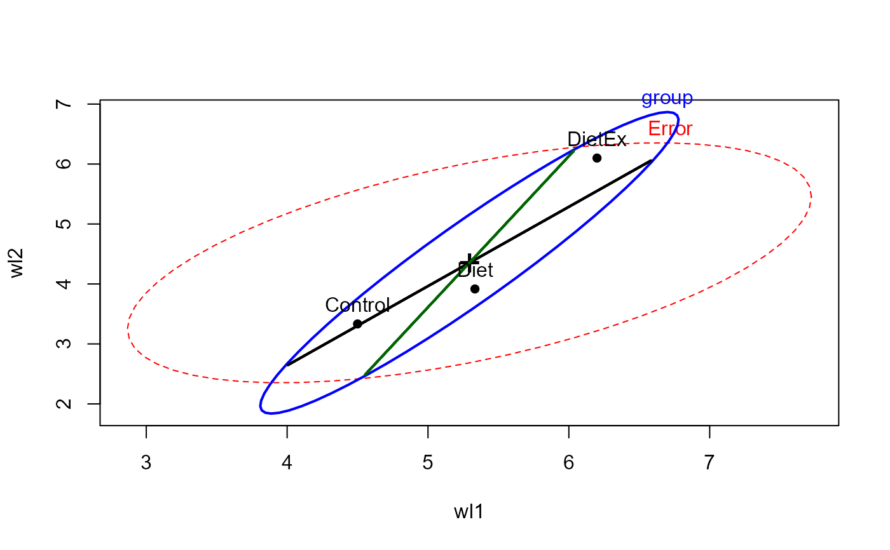
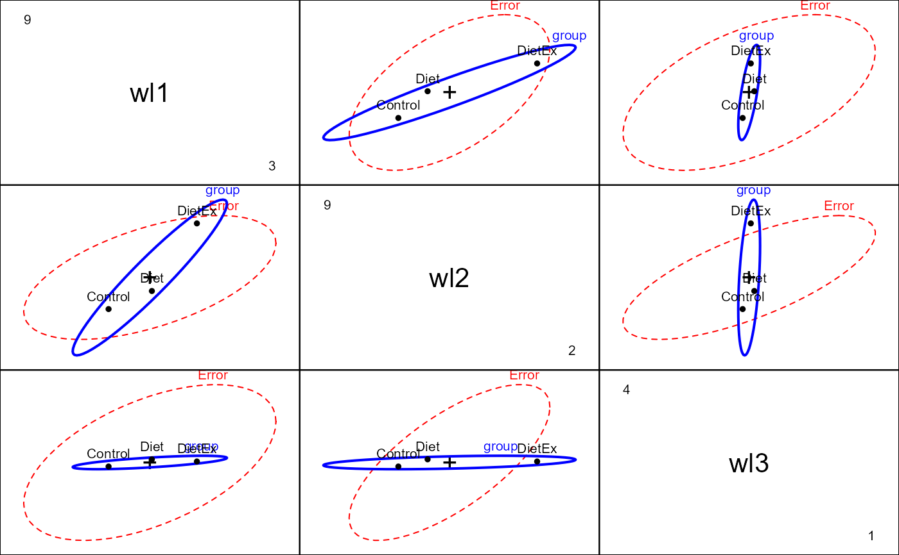
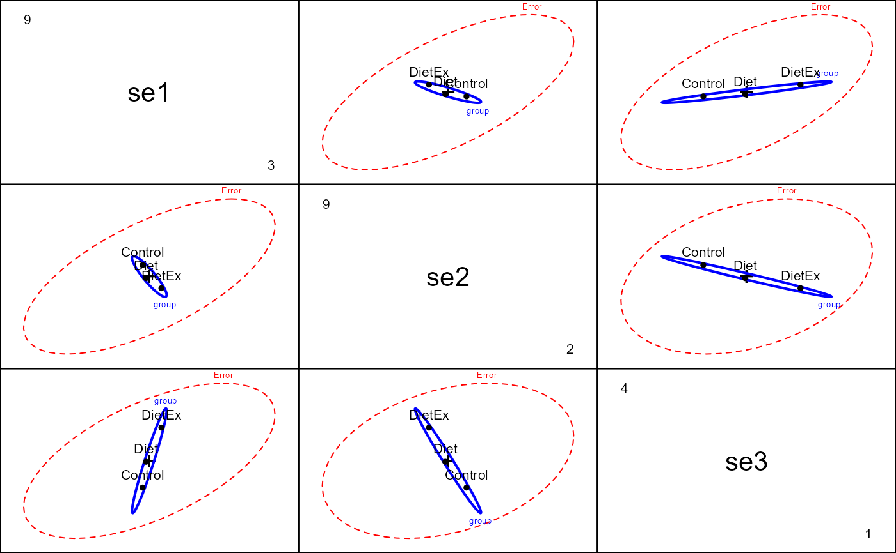
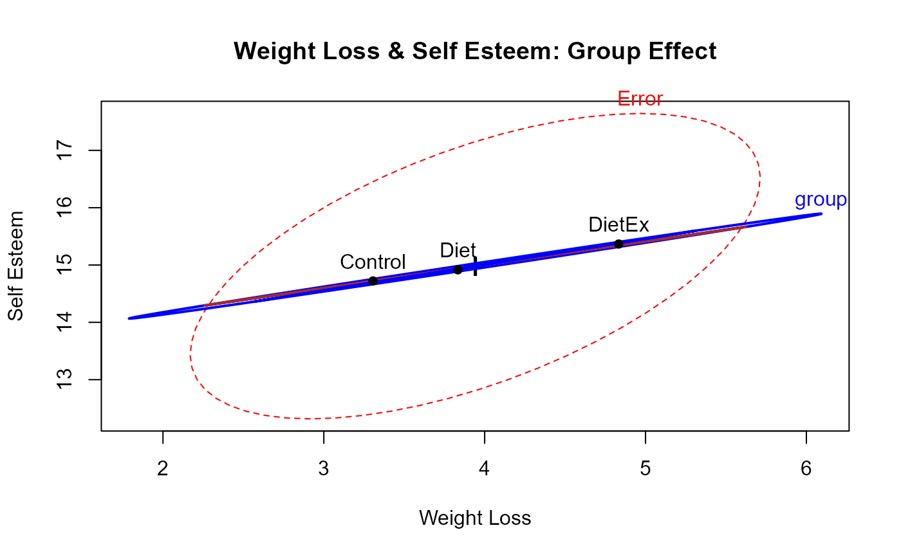
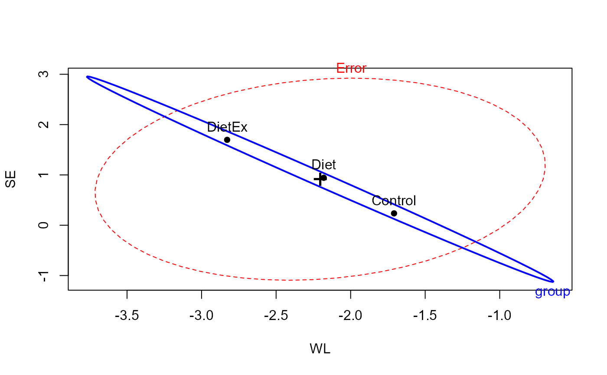
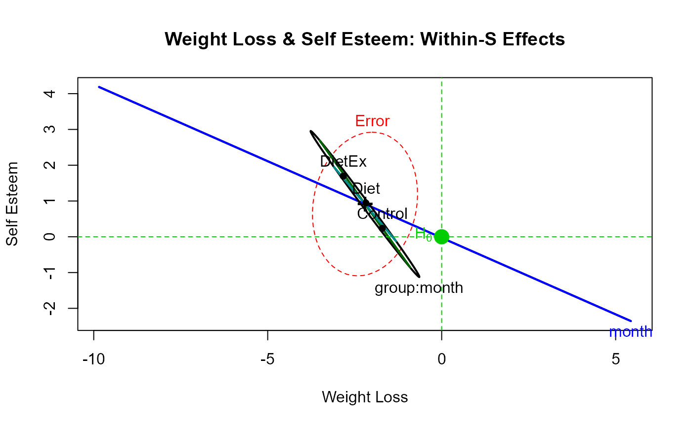

WeightLoss.RdContrived data on weight loss and self esteem over three months, for three groups of individuals: Control, Diet and Diet + Exercise. The data constitute a double-multivariate design.
data(WeightLoss)A data frame with 34 observations on the following 7 variables.
groupa factor with levels Control Diet DietEx.
wl1Weight loss at 1 month
wl2Weight loss at 2 months
wl3Weight loss at 3 months
se1Self esteem at 1 month
se2Self esteem at 2 months
se3Self esteem at 3 months
Helmert contrasts are assigned to group, comparing Control vs. (Diet DietEx)
and Diet vs. DietEx.
Originally taken from http://www.csun.edu/~ata20315/psy524/main.htm, but modified slightly
Friendly, Michael (2010). HE Plots for Repeated Measures Designs. Journal of Statistical Software, 37(4), 1-40. doi: 10.18637/jss.v037.i04 .
data(WeightLoss)
str(WeightLoss)
#> 'data.frame': 34 obs. of 7 variables:
#> $ group: Factor w/ 3 levels "Control","Diet",..: 1 1 1 1 1 1 1 1 1 1 ...
#> ..- attr(*, "contrasts")= num [1:3, 1:2] -2 1 1 0 -1 1
#> .. ..- attr(*, "dimnames")=List of 2
#> .. .. ..$ : chr [1:3] "Control" "Diet" "DietEx"
#> .. .. ..$ : NULL
#> $ wl1 : int 4 4 4 3 5 6 6 5 5 3 ...
#> $ wl2 : int 3 4 3 2 3 5 5 4 4 3 ...
#> $ wl3 : int 3 3 1 1 2 4 4 1 1 2 ...
#> $ se1 : int 14 13 17 11 16 17 17 13 14 14 ...
#> $ se2 : int 13 14 12 11 15 18 16 15 14 15 ...
#> $ se3 : int 15 17 16 12 14 18 19 15 15 13 ...
table(WeightLoss$group)
#>
#> Control Diet DietEx
#> 12 12 10
contrasts(WeightLoss$group) <- matrix(c(-2,1,1, 0, -1, 1),ncol=2)
(wl.mod<-lm(cbind(wl1,wl2,wl3,se1,se2,se3)~group, data=WeightLoss))
#>
#> Call:
#> lm(formula = cbind(wl1, wl2, wl3, se1, se2, se3) ~ group, data = WeightLoss)
#>
#> Coefficients:
#> wl1 wl2 wl3 se1 se2 se3
#> (Intercept) 5.34444 4.45000 2.17778 14.92778 13.79444 16.28333
#> group1 0.42222 0.55833 0.04722 0.08889 -0.26944 0.60000
#> group2 0.43333 1.09167 -0.02500 0.18333 -0.22500 0.71667
#>
heplot(wl.mod, hypotheses=c("group1", "group2"))

pairs(wl.mod, variables=1:3)

pairs(wl.mod, variables=4:6)

# within-S variables
within <- data.frame(measure=rep(c("Weight loss", "Self esteem"),each=3), month=rep(ordered(1:3),2))
# doubly-multivariate analysis: requires car 2.0+
if (FALSE) {
if (packageDescription("car")[["Version"]] >= 2) {
imatrix <- matrix(c(
1,0,-1, 1, 0, 0,
1,0, 0,-2, 0, 0,
1,0, 1, 1, 0, 0,
0,1, 0, 0,-1, 1,
0,1, 0, 0, 0,-2,
0,1, 0, 0, 1, 1), 6, 6, byrow=TRUE)
# NB: for heplots the columns of imatrix should have names
colnames(imatrix) <- c("WL", "SE", "WL.L", "WL.Q", "SE.L", "SE.Q")
rownames(imatrix) <- colnames(WeightLoss)[-1]
(imatrix <- list(measure=imatrix[,1:2], month=imatrix[,3:6]))
contrasts(WeightLoss$group) <- matrix(c(-2,1,1, 0,-1,1), ncol=2)
(wl.mod<-lm(cbind(wl1, wl2, wl3, se1, se2, se3)~group, data=WeightLoss))
(wl.aov <- Anova(wl.mod, imatrix=imatrix, test="Roy"))
heplot(wl.mod, imatrix=imatrix, iterm="group:measure")
}
}
# do the correct analysis 'manually'
unit <- function(n, prefix="") {
J <-matrix(rep(1, n), ncol=1)
rownames(J) <- paste(prefix, 1:n, sep="")
J
}
measure <- kronecker(diag(2), unit(3, 'M')/3, make.dimnames=TRUE)
colnames(measure)<- c('WL', 'SE')
between <- as.matrix(WeightLoss[,-1])
between.mod <- lm(between ~ group, data=WeightLoss)
Anova(between.mod)
#>
#> Type II MANOVA Tests: Pillai test statistic
#> Df test stat approx F num Df den Df Pr(>F)
#> group 2 0.72552 2.5617 12 54 0.009243 **
#> ---
#> Signif. codes: 0 '***' 0.001 '**' 0.01 '*' 0.05 '.' 0.1 ' ' 1
heplot(between.mod, hypotheses=c("group1", "group2"),
xlab="Weight Loss", ylab="Self Esteem",
col=c("red", "blue", "brown"),
main="Weight Loss & Self Esteem: Group Effect")

month <- kronecker(diag(2), poly(1:3), make.dimnames=TRUE)
colnames(month)<- c('WL', 'SE')
trends <- as.matrix(WeightLoss[,-1])
within.mod <- lm(trends ~ group, data=WeightLoss)
Anova(within.mod)
#>
#> Type II MANOVA Tests: Pillai test statistic
#> Df test stat approx F num Df den Df Pr(>F)
#> group 2 0.72552 2.5617 12 54 0.009243 **
#> ---
#> Signif. codes: 0 '***' 0.001 '**' 0.01 '*' 0.05 '.' 0.1 ' ' 1
heplot(within.mod)

heplot(within.mod, hypotheses=c("group1", "group2"),
xlab="Weight Loss", ylab="Self Esteem",
type="III", remove.intercept=FALSE,
term.labels=c("month", "group:month"),
main="Weight Loss & Self Esteem: Within-S Effects")
mark.H0()
